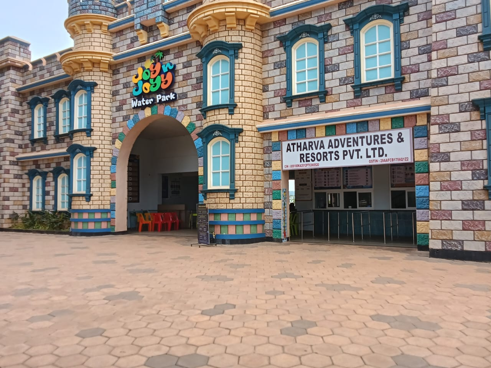
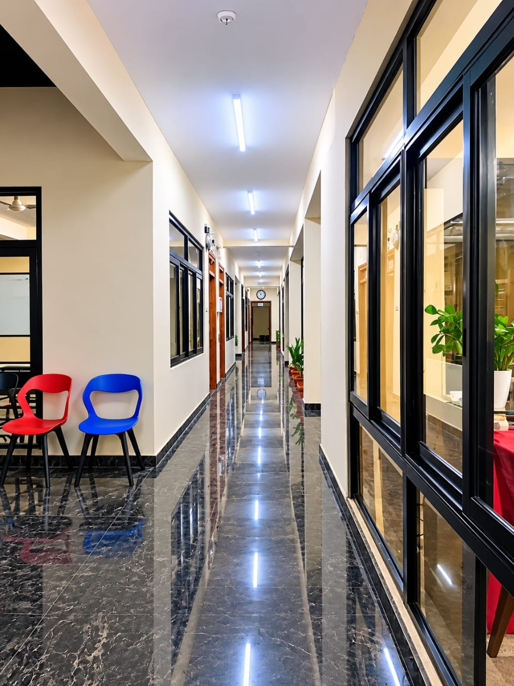

خوش آمدید
جامعہ اسلامیہ دریاباد ایک عظیم دینی درسگاہ ہے جہاں قرآن، حدیث، فقہ اور دیگر اسلامی علوم کے ساتھ ساتھ عصری تعلیم کا بھی بہترین انتظام ہے۔ ہمارا مقصد ایسی نسل تیار کرنا ہے جو دین اور دنیا دونوں میں کامیابی حاصل کر سکے۔
تعارف
جامعہ اسلامیہ دریاباد کی بنیاد اخلاص اور للہیت پر رکھی گئی ہے۔ اس ادارے کا مقصد سلف صالحین کے منہج پر قرآن و سنت کی خالص تعلیمات کو عام کرنا ہے۔ جامعہ میں ماہر اور تجربہ کار اساتذہ کی زیر نگرانی طلبہ کی علمی، فکری اور اخلاقی تربیت کی جاتی ہے تاکہ وہ معاشرے کے لیے ایک مفید شہری اور دین کے سچے خادم بن سکیں۔
داخلہ
نئے تعلیمی سال کے لیے داخلے جاری ہیں۔ داخلہ کے اصول و ضوابط اور فارم یہاں سے حاصل کریں۔
داخلہ فارم ڈاؤنلوڈ کریںامتحانات
جامعہ میں ششماہی اور سالانہ امتحانات کا انعقاد نہایت شفافیت کے ساتھ کیا جاتا ہے۔ امتحانات کا ٹائم ٹیبل اور دیگر ہدایات یہاں شائع کی جاتی ہیں۔
نتائج
تمام درجات کے امتحانی نتائج یہاں اپلوڈ کیے جاتے ہیں۔
درجہ پنجم کا سالانہ رزلٹ - ۲۰۲۶
پی ڈی ایف دیکھیںطلبہ کا میگزین
جامعہ کے طلبہ کی علمی و ادبی تحریریں، مقالات اور شعری ذوق پر مبنی مجلہ۔
پی ڈی ایف دیکھیںمجلہ استدراک
جامعہ اسلامیہ دریاباد کا ترجمان 'مجلہ استدراک'۔ اس میں اکابرین کے مضامین اور اہم دینی و ملی مسائل پر رہنمائی موجود ہوتی ہے۔
پی ڈی ایف دیکھیںتصاویر


